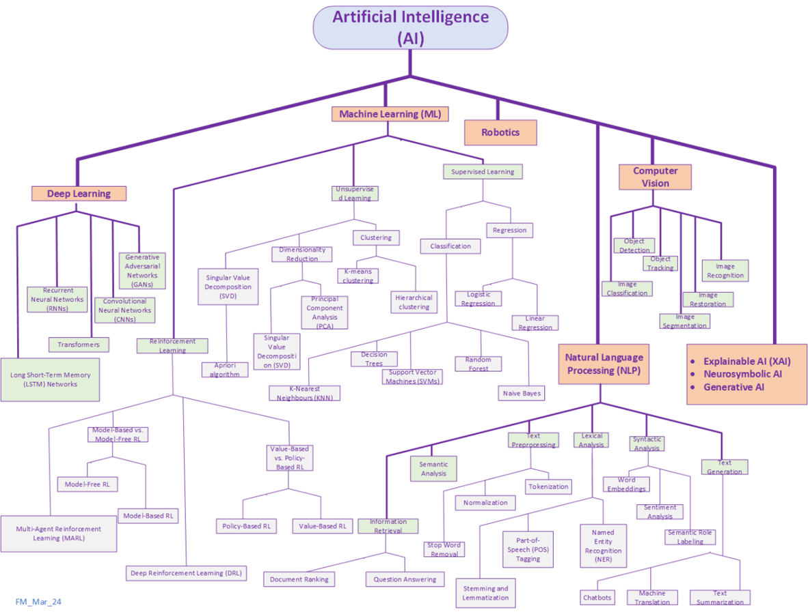

Kirish
Sun’iy intellekt (AI) - bu kompyuter tizimlarining odatda inson intellekti bilan bog‘liq bo‘lgan o‘rganish, fikrlash, muammolarni hal qilish, idrok etish va qaror qabul qilish kabi vazifalarni bajarish qobiliyati. Amaliy jihatdan AI – bu berilganlardan (data) foydalanib modellash, bashorat va qaror qilishni optimallashtirishdir.

Sun’iy intellektning asosiy bo‘limlari:
Mashinali o‘rganish (Machine learning) - Kompyuterlar ma’lumotlardan naqsh (pattern) va qonuniyatlarni o‘rganadi va shu asosida bashorat yoki qaror qabul qiladi.
Kompyuterli ko‘rish (Computer vision) - Kompyuter tasvir yoki videodan obyektlarni ko‘rish va tanish qobiliyatiga ega bo‘ladi. Masalan: yuzni aniqlash, avtoulov raqamini o‘qish.
Qat’iymas mantiq (Fuzzy logic) - Aniq “ha” yoki “yo‘q” qarorlardan tashqari, orasidagi qiymatlar (masalan, “biroz issiq”, “ko‘proq sovuq”) bilan ishlashga imkon beradi. Masalan: konditsioner avtomatik boshqaruvi.
Ekspert tizimlar (Expert systems) - Ma’lum bir sohaga oid qoidalar va bilimlar bazasiga tayanib, mutaxassis kabi qaror chiqaradi. Masalan: tibbiy diagnostika dasturi.
Robototexnika (Robotics) - AI yordamida robotlar harakatlanish, idrok qilish va muhit bilan o‘zaro ta’sir qilish imkoniyatiga ega bo‘ladi. Masalan: omborda buyurtmalarni yig‘uvchi robot.
Neyron tarmoqlar / Chuqur o‘rganish (Neural networks/deep learning) - Inson miyasi ishlashiga o‘xshash model: ko‘p qatlamli tarmoqlar orqali murakkab naqshlarni o‘rganadi.
Tabiiy tilni qayta ishlash (Natural language processing) - Kompyuterning inson tilini tushunishi, qayta ishlashi va yaratishi.
Generativ AI (Generative AI) - Yangi kontent — matn, rasm, musiqa yoki video yaratadigan modellar.
🧠 SUN’IY INTELLEKT / ARTIFICIAL INTELLIGENCE Roadmap
Sun’iy intellekt sohasini o’rganish bo’yicha mukammal yo’l xaritasi.
🟢 0. Asosiy tayyorgarlik Dasturlash va matematik poydevor
Dasturlash: Python
Kutubxonalar: NumPy, Pandas, Matplotlib
Matematika:
Chiziqli algebra
Ehtimollik va statistika
Optimallashtirish asoslari
Ma’lumotlar bilan ishlash (Data Analysis)
🏛️ 1. Klassik AI / Symbolic AI An’anaviy algoritmlar va mantiq
Qidiruv algoritmlari:
BFS (Breadth-First Search)
DFS (Depth-First Search)
A* (A-star)
Minimax algoritmi
Ekspert tizimlar
Qoidalar asosida xulosa chiqarish
Mantiqiy modellar
Knowledge representation (Bilimlarni tasvirlash)
🤖 2. Machine Learning (Mashinali o’rganish) Berilganlardan o’rganuvchi algoritmlar
Supervised Learning (Nazorat ostidagi o’rganish)
Regression & Classification
k-NN (k-Nearest Neighbors)
Decision Tree & Random Forest
SVM (Support Vector Machines)
Logistic Regression
Gradient Boosting (XGBoost, LightGBM, CatBoost)
Unsupervised Learning (Nazorat qilinmagan o’rganish)
Clustering: K-Means, DBSCAN, HDBSCAN, Hierarchical Clustering
Dimensionality Reduction: PCA, t-SNE, UMAP
Anomaly Detection (Anomaliyalarni aniqlash)
Qo’shimcha tushunchalar
Semi-supervised & Self-supervised Learning
Feature Engineering & Feature Selection
Model Evaluation (Baholash):
Train/Test split, Cross-validation
Metrics: Accuracy, Precision, Recall, F1-score, ROC-AUC
Confusion Matrix
Overfitting / Underfitting tushunchalari
🕸️ 3. Deep Learning (Chuqur o’rganish) Neyron tarmoqlari davri
Neural Network asoslari: Perceptron, Activation functions, Loss functions, Backpropagation, Gradient Descent
CNN (Convolutional Neural Networks): Tasvirlarni klassifikatsiya qilish, obyektlarni aniqlash.
RNN / LSTM / GRU: Ketma-ket ma’lumotlar va Time series (vaqtli qatorlar).
Transformer: Attention mechanism, Encoder, Decoder, BERT, GPT, Vision Transformer.
Autoencoder: Ma’lumotlarni siqish, shovqinni tozalash (Denoising).
👁️ 4. Computer Vision (Kompyuter ko’rishi)
Image preprocessing (Tasvirlarga ishlov berish)
CNN Architectures: LeNet, AlexNet, VGG, ResNet, EfficientNet
Object Detection: R-CNN, Fast R-CNN, Faster R-CNN, YOLO, SSD
Segmentation: U-Net, Mask R-CNN, DeepLab
Medical Imaging (Tibbiy tasvirlar tahlili)
💬 5. Natural Language Processing (NLP) Tabiiy tilga ishlov berish
Text preprocessing & Tokenization
Modellar: Bag of Words, TF-IDF, Word2Vec, FastText, BERT embeddings
Vazifalar: Text classification, NER (Named Entity Recognition), Machine Translation, Text summarization
LLM (Large Language Models) asoslari
🎨 6. Generative AI Yangi kontent yaratish
LLM: GPT, Claude, Gemini, Llama
Prompt Engineering
RAG (Retrieval-Augmented Generation): Embedding, Vector Database, Retrieval, Generation
Fine-tuning: LoRA / QLoRA
Diffusion Models: Image generation, Stable Diffusion
Multimodal AI: Matn, tasvir, audio va video bilan birga ishlash.
🎮 7. Reinforcement Learning Rag’batlantirish orqali o’rgatish
Komponentlar: Agent, Environment, State, Action, Reward
Policy & Value function
Q-Learning & Deep Q-Network (DQN)
Policy Gradient & Actor-Critic
🚀 8. MLOps / AI Engineering Modellarni amaliyotga joriy etish
Model deployment & API qilish (FastAPI / Django)
Docker va konteynerizatsiya
Model monitoring & Experiment tracking
Data versioning (DVC)
Cloud deployment (AWS, Google Cloud, Azure)
⚖️ 9. AI Ethics and Safety Etika va xavfsizlik
Bias (Yon bosish) va Fairness (Adolat)
Explainability (Tushuntirib bera olish)
Privacy (Maxfiylik) va Security (Xavfsizlik)
Responsible AI & Legal issues (Huquqiy masalalar)